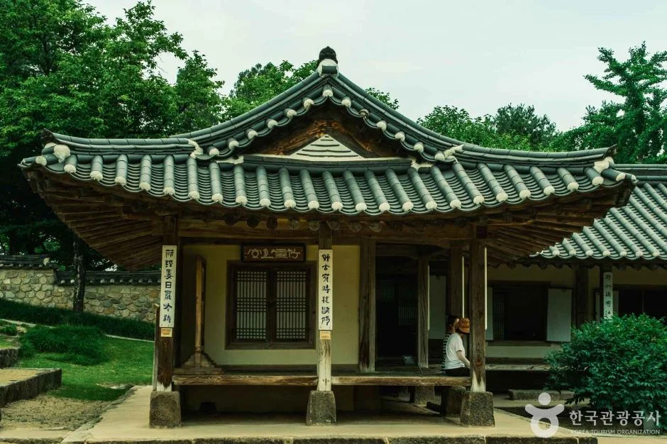
▲ 추사 김정희 선생 고택의 기와집 건물. 촬영 시기는 자료에 없다. ⓒ 한국관광공사 · 공공누리 제1유형
"예산 추사고택이랑 수덕사, 하루에 다 볼 수 있을까? 어디서부터 가야 하지?" 이 글은 2026년 10월 20일 기준으로 예산군 추사고택·추사기념관 누리집과 한국관광공사 정보, 국가유산청 자료를 바탕으로 두 곳의 운영시간·요금·주차와 반나절 동선을 정리했다. 결론부터 말하면 두 곳은 관람 조건이 정반대다. 추사고택은 월요일 휴관에 11월부터 17시에 닫고, 수덕사는 상시 개방이다. 추사고택 관람안내 바로가기
예산은 예당호 출렁다리만 다녀가는 경우가 많다. 하지만 서예가 추사 김정희의 옛집과 고려 시대 목조 건축인 수덕사 대웅전, 화가 이응노가 머문 초가집까지 한 번에 묶으면 걷기 좋은 문화유산 반나절 코스가 된다. 다만 두 곳 사이의 공식 이동 시간은 확인하지 못했으므로, 출발 전에 내비게이션으로 직접 확인하자.
💡 먼저 결론
추사고택(예산군 신암면)은 관람료·주차료 무료, 3~10월 09:00~18:00, 11~2월 09:00~17:00, 매주 월요일(월요일이 공휴일이면 다음 날)과 1월 1일·설·추석 당일 휴관이다. 수덕사(덕산면)는 한국관광공사 기준 상시 개방·연중무휴, 주차 소형 250대·대형 25대이며, 템플스테이를 운영한다. 수덕사 대웅전은 고려 충렬왕 34년(1308)에 지은 국보다. 순서는 추사고택 먼저, 수덕사 나중이 안전하다.
1. 반나절 코스 한눈에 — 닫는 시간이 순서를 정한다
두 곳의 운영 조건이 달라 동선은 사실상 정해진다. 추사고택은 폐관 시각이 있고 수덕사는 상시 개방이므로, 폐관이 빠른 추사고택을 먼저 보고 오후에 수덕사로 넘어가는 편이 안전하다. 특히 11월부터는 추사고택이 17시에 닫는다.
| 항목 | 추사 김정희 선생 고택 | 수덕사 |
|---|---|---|
| 위치 | 예산군 신암면(예산군 누리집 주소 추사고택로 295, 한국관광공사 정보는 추사고택로 261로 표기) | 예산군 덕산면 수덕사안길 79 |
| 운영시간 | 3~10월 09:00~18:00 / 11~2월 09:00~17:00 | 상시 개방, 연중무휴(한국관광공사). 충남관광 안내 페이지는 04:00~20:00로 표기해 자료마다 다름. 수덕여관은 09:00~18:00 |
| 휴관 | 매주 월요일(공휴일이면 다음 날), 1월 1일, 설·추석 당일 | 연중무휴(한국관광공사) |
| 요금 | 관람료·주차료 무료(예산군 안내) | 문화재 관람료 면제 대상(2023년 5월 시행), 주차 요금은 확인하지 못함 |
| 주차 | 가능(한국관광공사). 면수는 확인하지 못함 | 가능, 소형 250대·대형 25대(한국관광공사) |
| 문의 | 041-339-8248 | 041-330-7700 |
▲ 추사 김정희 선생 고택의 기와집 건물. 한국관광공사 사진 설명에는 건물명이 따로 없고 촬영 시기도 자료에 없다. ⓒ 한국관광공사 · 공공누리 제1유형
2. 추사 김정희 선생 고택 — 1786~1856, 실학자이자 서예가의 옛집
한국관광공사는 추사 김정희(1786~1856)를 조선 후기의 대표적인 실학자이자 서예가로 소개한다. 고택은 안채와 사랑채 2동으로 이루어져 있으며, 영조의 사위이자 김정희의 증조할아버지인 김한신이 지은 집이라고 전해진다. 안채는 가운데 마당을 중심으로 사방이 막힌 ㅁ자형 배치이고, 사랑채는 ㄱ자형으로 남향해 있다. 예산군 추사기념관 누리집 바로가기
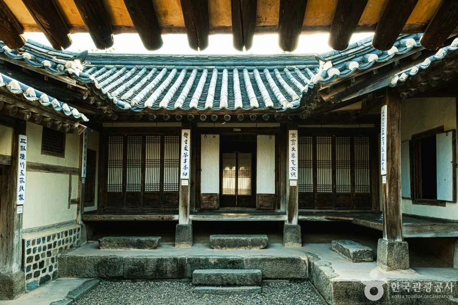
▲ 안채 마당 쪽에서 본 처마와 툇마루로 보이는 장면. 정확한 건물 위치는 사진 설명에 없다. ⓒ 한국관광공사 · 공공누리 제1유형
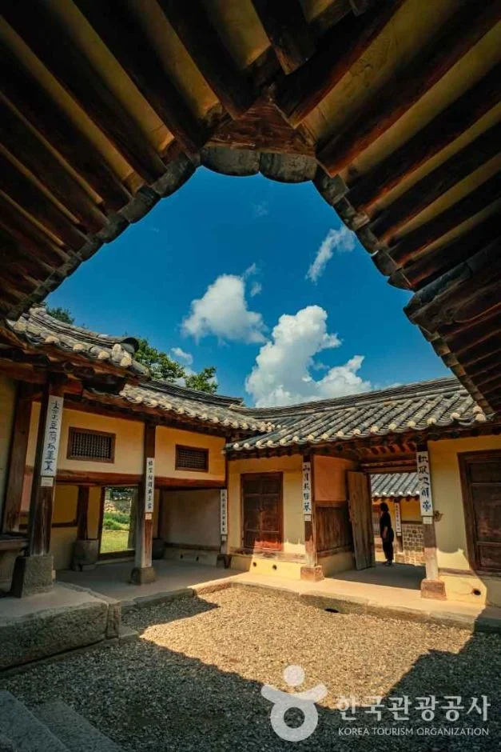
▲ 고택 건물 사이로 하늘과 기와지붕이 보이는 세로 사진. 촬영 시기는 자료에 없다. ⓒ 한국관광공사 · 공공누리 제1유형
예산군 누리집은 고택과 함께 이 일대의 국가유산 목록을 안내한다. 아래 지정 종목과 지정일은 예산군 추사기념관 누리집 표기를 그대로 옮긴 것이며, 지정번호는 누리집에 없었다. 추사고택 국가유산현황 바로가기
| 문화재명 | 지정종목 | 지정일 |
|---|---|---|
| 예산 용궁리 백송 | 천연기념물 | 1962.12.03. |
| 김정희선생 고택(안채·사랑채) | 유형문화유산 | 1976.01.08. |
| 화순옹주홍문 | 유형문화유산 | 1976.01.08. |
| 김정희선생필적암각문 | 기념물 | 1998.12.29. |
| 김정희 묘 | 문화유산자료 | 1984.05.17. |
| 월성위김한신 묘 | 문화유산자료 | 1984.05.17. |
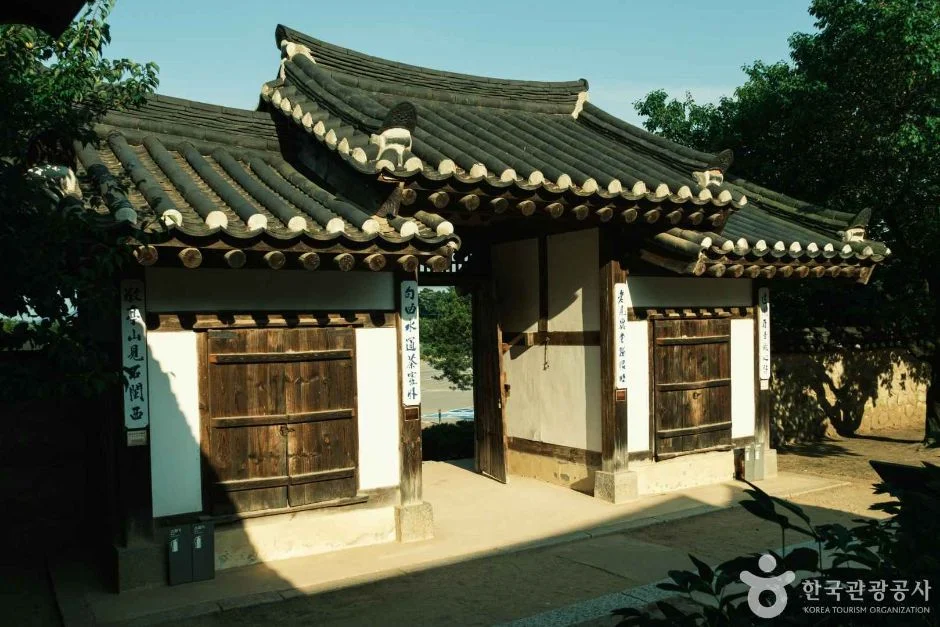
▲ 고택의 문간으로 보이는 장면. 정확한 위치는 사진 설명에 없다. ⓒ 한국관광공사 · 공공누리 제1유형
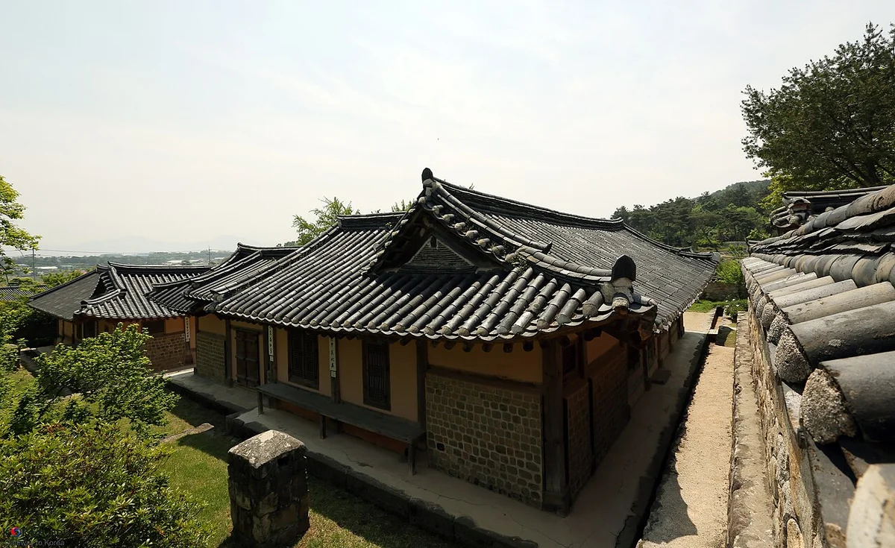
▲ 고택 기와지붕과 건물 측면. 위키미디어 커먼즈 기록상 2014년 5월 14일 촬영된 코리아넷 사진(충남 예산 신암면 용궁리 '추사 김정희 고택')이다. ⓒ 전한 · Korea.net(문화체육관광부 해외문화홍보원) · CC BY-SA 2.0(위키미디어 커먼즈)
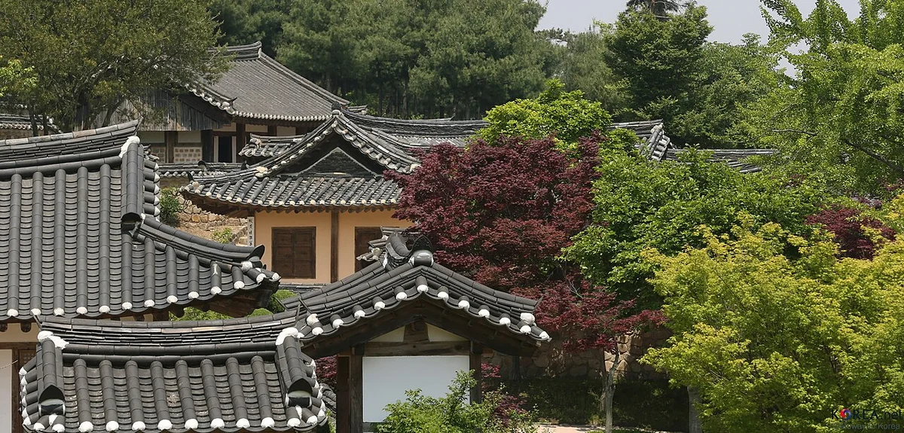
▲ 지붕이 겹쳐 보이는 고택 일대. 2014년 5월 14일 촬영 기록. 계절은 사진 속 초록 잎으로만 짐작되며 현재 모습과 다를 수 있다. ⓒ 전한 · Korea.net(문화체육관광부 해외문화홍보원) · CC BY-SA 2.0(위키미디어 커먼즈)
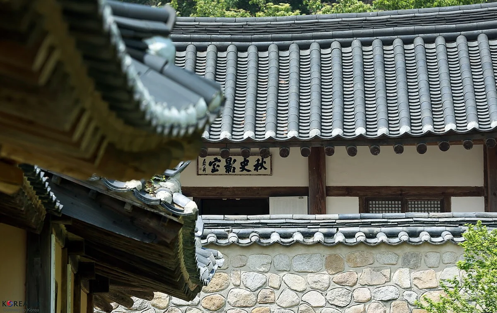
▲ 처마와 돌담, 현판이 걸린 건물. 2014년 5월 14일 촬영 기록. 건물 이름은 사진 설명에 없다. ⓒ 전한 · Korea.net(문화체육관광부 해외문화홍보원) · CC BY-SA 2.0(위키미디어 커먼즈)
3. 추사기념관과 체험 — 월요일·10월 휴관일 먼저 확인
예산군 누리집에는 추사기념관, 추사고택, 추사체험실이 함께 안내된다. 같은 누리집 공지에 따르면 2026년 7월 10일 개관 기념 특별전 '추사, 요동을 가다'가 열렸고, 기념관 이전에 따라 일부 메뉴가 제한될 수 있다고 적혀 있다. 전시 구성은 직접 확인하지 못해 적지 않는다. 추사기념관·체험 안내 바로가기
| 항목 | 내용 |
|---|---|
| 2026년 10월 정기휴관일 | 6일(화), 12일(월), 19일(월), 26일(월) |
| 관람 문의 | 041-339-8248 |
| 해설 문의 | 041-339-8247 (해설은 사전 예약, 예산군 안내) |
| 체험 문의 | 041-339-8246 |
| 접수 중 체험 프로그램 | 추사체 써보기, 난초 그리기, 세한도 그리기, 종이접기, 탁본체험, 나비부채·원형부채 꾸미기, 세한도 색칠하기 |
| 체험 요금 | 누리집에 숫자만 표기돼 의미를 확인하지 못함. 신청 전 문의 |
이 글을 쓴 10월 20일은 화요일이라 열려 있지만, 26일은 월요일이라 쉰다. 10월 6일(화)이 휴관인 것은 개천절 대체공휴일(5일 월요일) 다음 날이기 때문으로 보인다. 관람 시 흡연·음주·취사는 금지이고, 추사기념관과 추사고택은 반려동물 출입이 제한된다(장애인 보조견 제외).
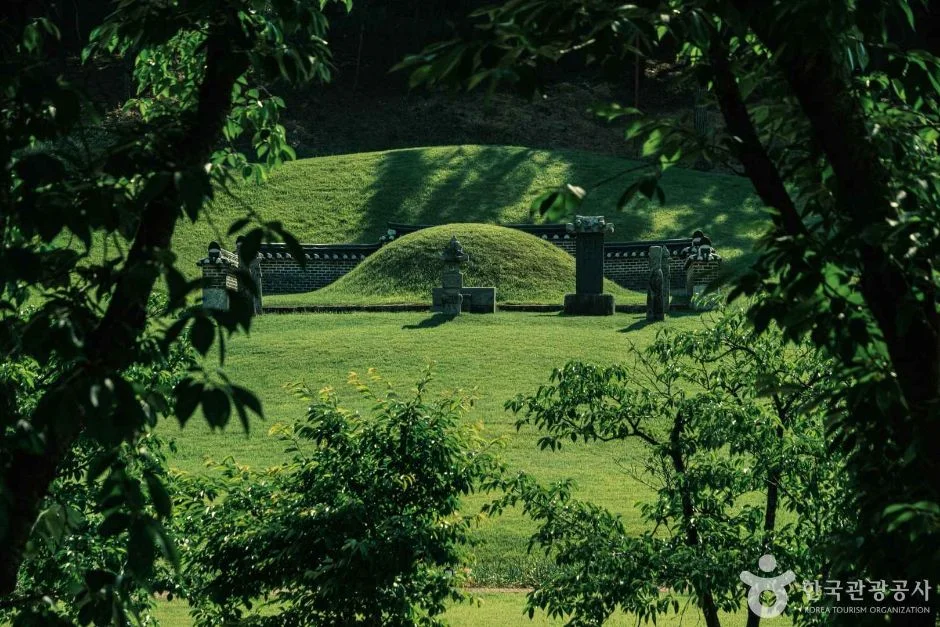
▲ 잔디 위에 봉분과 석물이 있는 장면. 사진 설명은 "김정희 선생 유적"뿐이라 어느 묘인지는 확인하지 못했다. ⓒ 한국관광공사 · 공공누리 제1유형
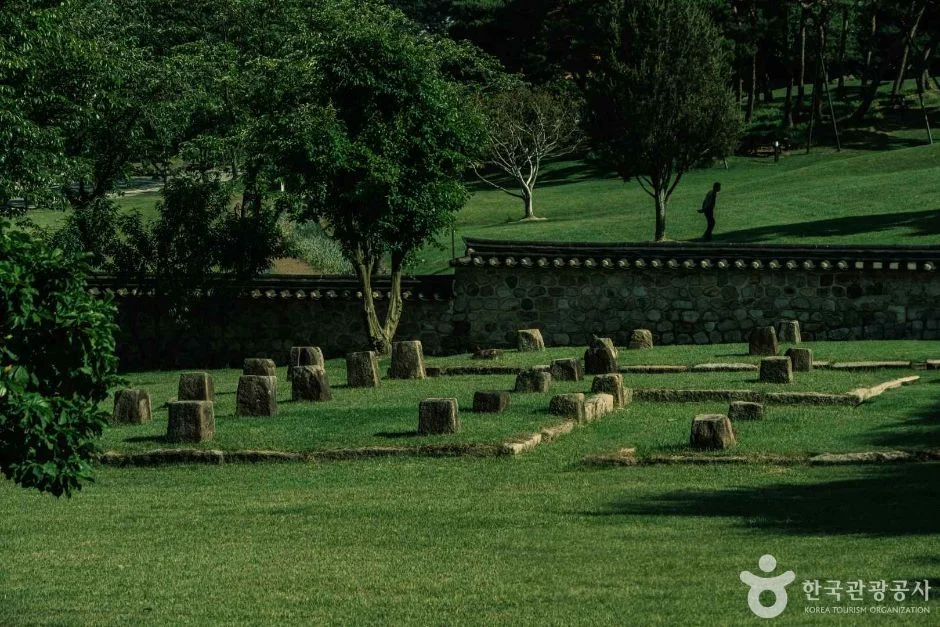
▲ 잔디밭에 돌이 놓인 고택 일대 풍경. 사진 설명에 정확한 지점은 없다. ⓒ 한국관광공사 · 공공누리 제1유형
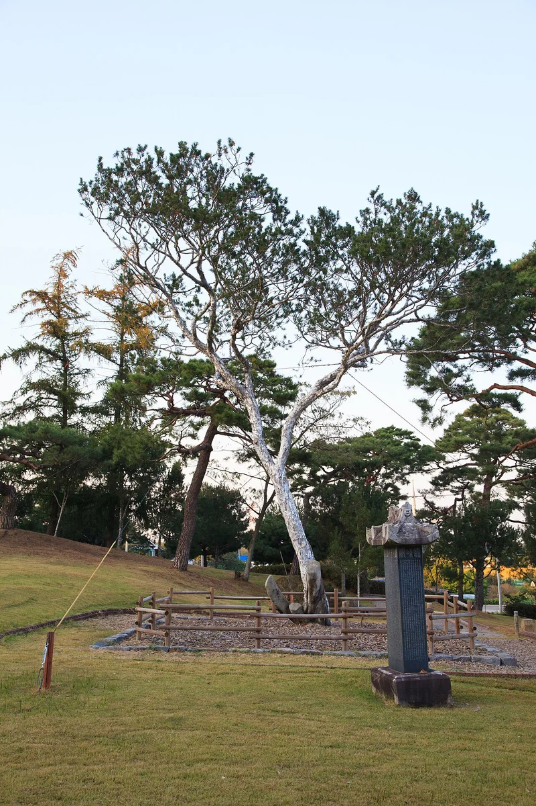
▲ 용궁리 백송으로 올라 있는 사진(국가유산청 제공, 촬영년도 2015년 표기). 예산군 안내의 천연기념물 '예산 용궁리 백송'과 같은 대상이며 고택 인근이다. ⓒ 국가유산청 · 공공누리 제1유형(위키미디어 커먼즈)
4. 수덕사 — 국보 대웅전과 덕숭산 자락의 1,500년 고찰
한국관광공사는 수덕사를 덕숭산(495m) 남쪽 자락의 사찰로, 대한불교조계종 제7교구 본사이자 백제 6세기경 창건된 고찰로 소개한다. 예산군 제1경으로 꼽힌다. 국가유산포털에는 예산 수덕사 대웅전이 1962년 12월 20일 국보(제49호)로 지정된 것으로, 시대는 고려 충렬왕 34년(1308)으로 표시돼 있다. 수덕사 공식 누리집 바로가기
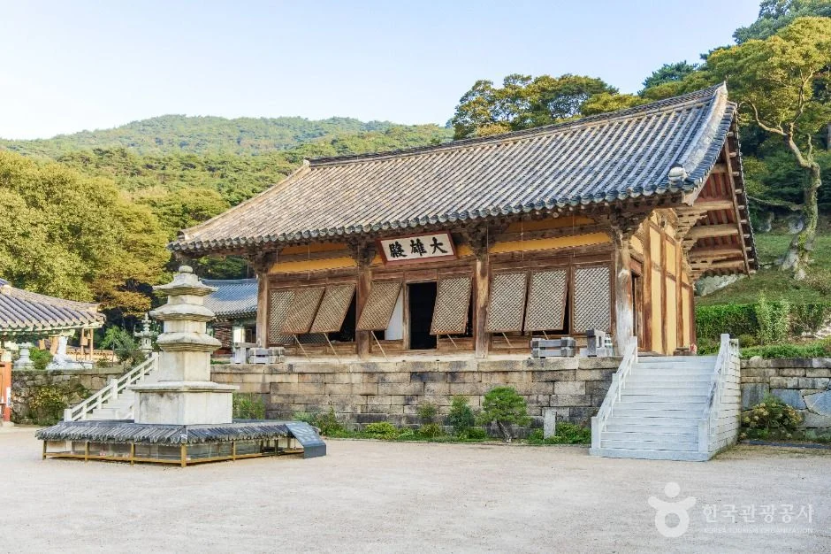
▲ 수덕사 경내의 전각과 석탑. 어느 전각인지는 사진 설명에 없어 대웅전이라고 단정하지 않는다. ⓒ 한국관광공사 · 공공누리 제1유형
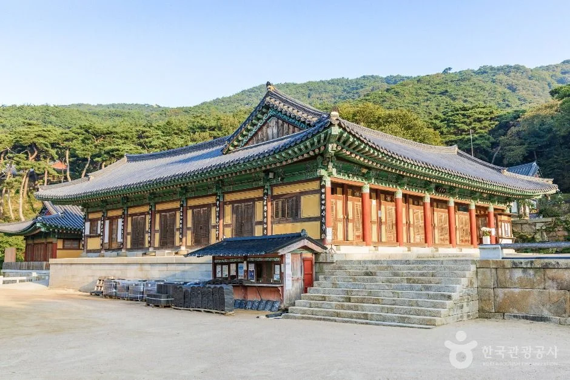
▲ 수덕사 경내의 또 다른 전각. 촬영 시기는 자료에 없다. ⓒ 한국관광공사 · 공공누리 제1유형
경내에는 보물 노사나불괘불탱과 묘법연화경, 충청남도 지정 삼층석탑·칠층석탑, 근역성보관(불교 문화재 소장)이 있다고 한국관광공사가 안내한다. 대웅전의 건립 연대는 묵서명으로 확인됐다고 언론이 전하며, 현존하는 국내 최고(最古) 목조 건축물 중 하나로 소개된다. 건축 양식의 세부는 문화유산청 상세 설명을 직접 보지 못해 적지 않는다.
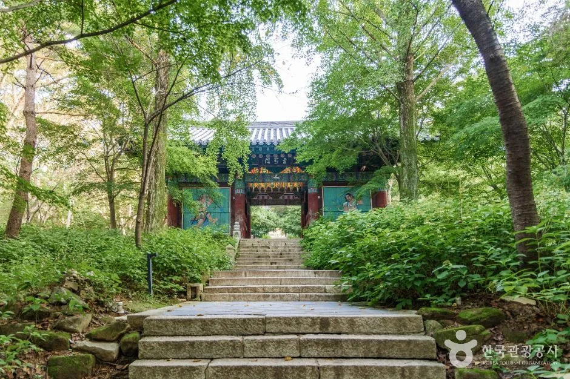
▲ 숲길 돌계단 끝에 문이 보이는 장면. 촬영 시기는 자료에 없다. ⓒ 한국관광공사 · 공공누리 제1유형
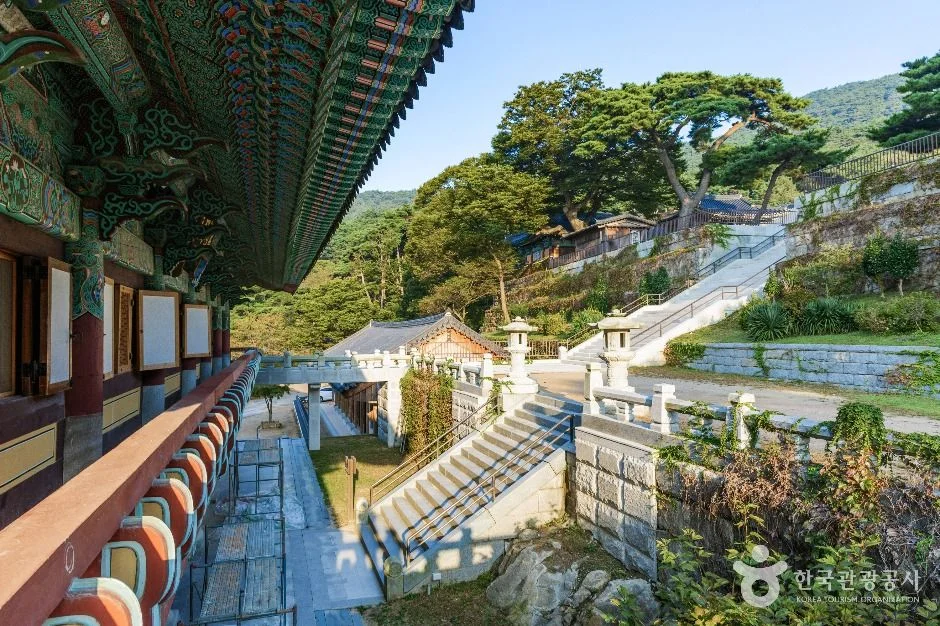
▲ 처마 아래에서 본 경내 계단과 석등. 촬영 시기는 자료에 없다. ⓒ 한국관광공사 · 공공누리 제1유형
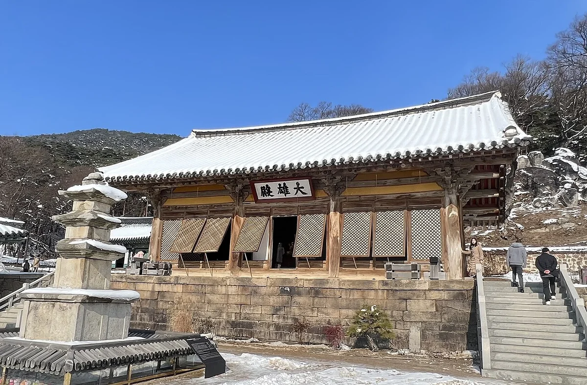
▲ 지붕과 계단 곁에 눈이 남은 대웅전 일대. 위키미디어 커먼즈 기록상 2023년 12월 24일 촬영이다. ⓒ Jjw · CC BY 4.0(위키미디어 커먼즈)
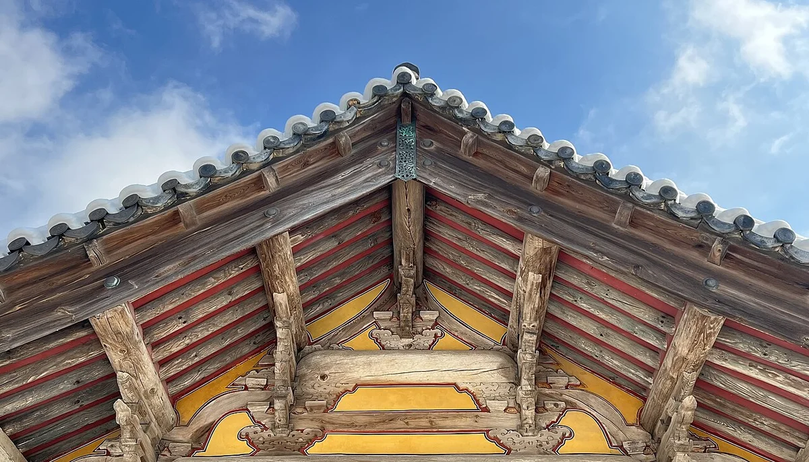
▲ 처마와 박공 아래 단청과 공포가 보이는 모습. 같은 날(2023-12-24) 촬영 기록. ⓒ Jjw · CC BY 4.0(위키미디어 커먼즈)
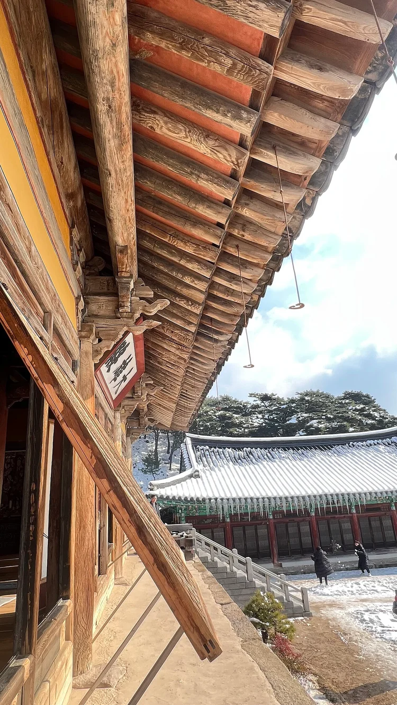
▲ 처마 아래 회랑에서 본 눈 덮인 경내. 같은 날(2023-12-24) 촬영 기록. ⓒ Jjw · CC BY 4.0(위키미디어 커먼즈)
5. 수덕여관(이응노선생사적지) — 초가집과 바위 암각화
수덕사 경내에 있는 수덕여관은 고암 이응노(1904~1989) 화백이 작품 활동을 하던 초가집이다. 한국관광공사 설명에 따르면 그전에는 우리나라 최초의 여류화가 나혜석이 머물렀고, 이응노는 1944년 이 집을 사서 6·25 피난처로 삼았다가 1959년 프랑스로 건너갔다. 1967년 동백림 사건 이후 잠시 귀국해 요양할 때 근처 바위에 남긴 암각화가 지금도 있다. 1996년 충청남도 기념물로 지정됐다.
| 항목 | 내용 |
|---|---|
| 명칭 | 이응노선생사적지(수덕여관) |
| 주소 | 예산군 덕산면 수덕사로 896 |
| 이용시간 | 09:00~18:00, 연중무휴 |
| 주차 | 가능(면수 확인하지 못함) |
| 함께 볼 곳 | 이응노·근현대 예술인 작품과 불교 미술품을 전시하는 선미술관(관람 요금·시간은 확인하지 못함) |
| 문의 | 수덕사 041-330-7700 |
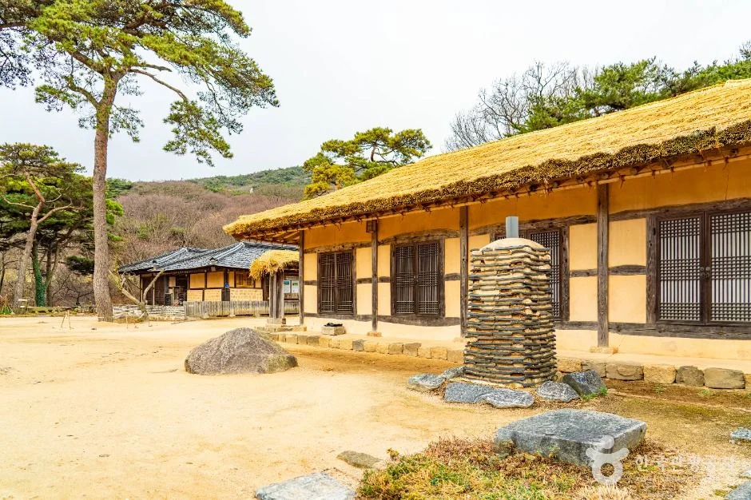
▲ 초가지붕의 수덕여관 건물. 촬영 시기는 자료에 없다. ⓒ 한국관광공사 · 공공누리 제1유형
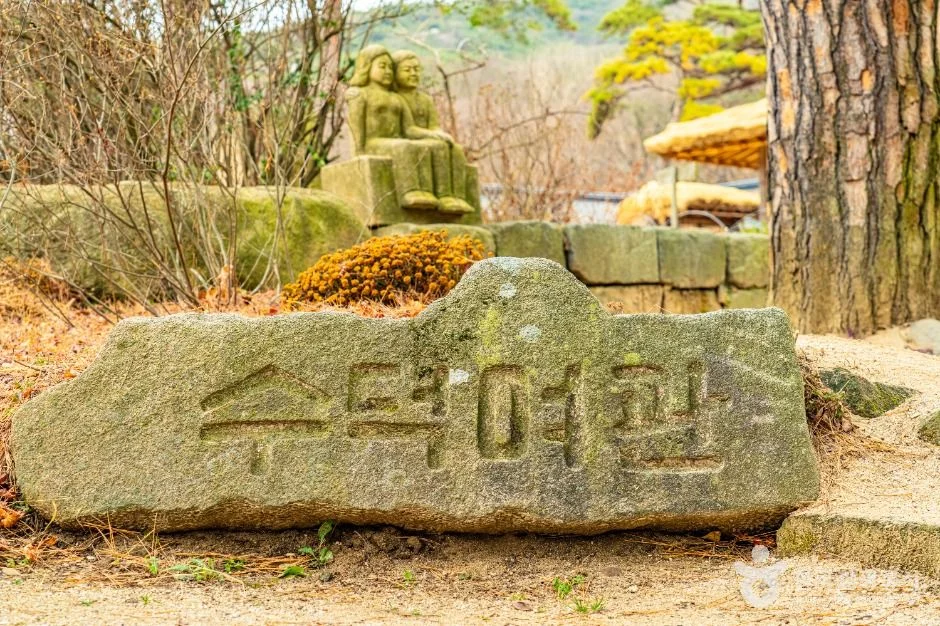
▲ "수덕여관"이라고 새긴 표지석. 촬영 시기는 자료에 없다. ⓒ 한국관광공사 · 공공누리 제1유형
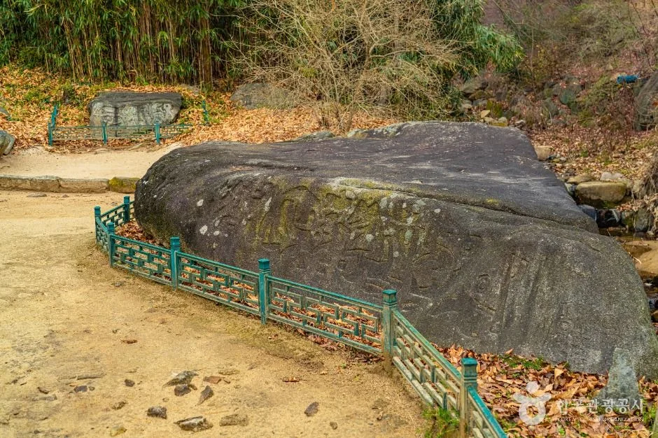
▲ 울타리가 둘러진 바위. 이응노가 남긴 암각화가 있는 바위 일대로 소개되지만 사진 속에서 문양은 확인되지 않는다. ⓒ 한국관광공사 · 공공누리 제1유형
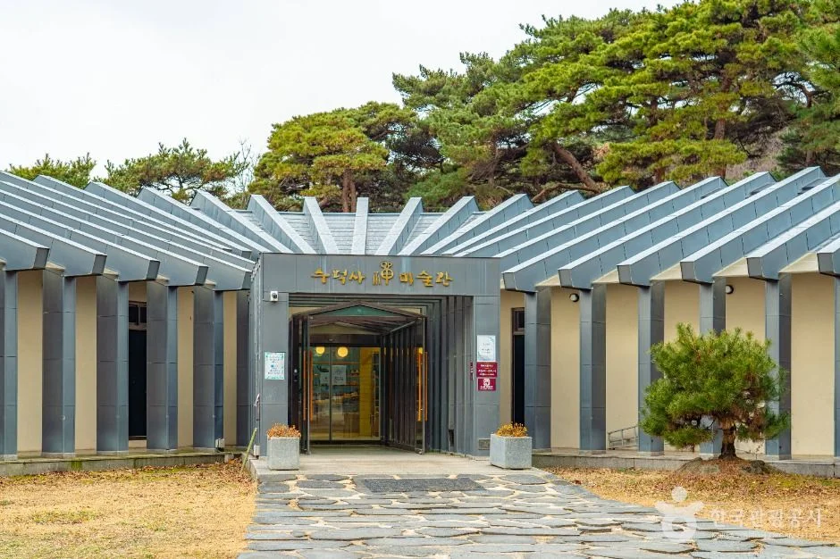
▲ 전시관 입구로 보이는 건물. 선미술관인지는 사진 설명에 없어 확인하지 못했다. ⓒ 한국관광공사 · 공공누리 제1유형
예산 수덕사 이응노선생사적지는 마당 암반에 새겨진 문자 추상 암각화 2점을 볼 수 있다고 뉴시스가 2026년 5월 보도했다. 암각화는 보호 울타리 안에 있어 가까이에서 훼손하지 않도록 주의하자.
6. 입장료·주차·템플스테이 — 확인한 것과 못 한 것
사찰 문화재 관람료는 2023년 5월 4일부터 조계종 산하 주요 65개 사찰에서 면제됐고, 보도된 면제 사찰 목록에 수덕사가 들어 있다. 다만 정부·지자체 지원으로 관람료를 면제하는 방식이라 정책이 바뀔 수 있고, 주차료는 별도라는 보도가 있다. 2026-10-20 재확인에서도 충남관광 안내 페이지는 주차시설 "있음"만 적고 요금·면수는 싣지 않았으며, 한국관광공사 덕산도립공원 항목에는 수덕사 입장료(성인 4,000원 등)와 주차 "무료"가 함께 표기돼 있으나 관람료 면제 이전 정보로 보이고 2023년 면제·주차료 별도 보도와 맞지 않는다. 그래서 2026년 현재 수덕사 주차 요금은 공식 자료에서 확인하지 못했다. 다만 2026년 3월 방문 후기에 주차료 4,000원이라는 언급이 있었으나 개인 후기이므로 현장 확인이 필요하다.
| 항목 | 확인한 내용 | 미확인 |
|---|---|---|
| 개방 | 상시 개방, 연중무휴(한국관광공사). 충남관광은 04:00~20:00 표기 | 두 표기 중 현행 확인 |
| 문화재 관람료 | 2023년 5월 면제 대상(언론 보도) | 2026년 현재 정책 변동 여부 |
| 주차 | 가능, 소형 250대·대형 25대(한국관광공사) | 주차 요금 |
| 템플스테이 | 한국관광공사가 체험으로 "템플스테이" 운영 안내. 템플스테이 예약 사이트에 수덕사 휴식형 프로그램이 검색됨 | 현재 모집 일정·요금·예약 가능 여부 |
| 문의 | 041-330-7700(한국관광공사 수록) | — |
템플스테이는 한국불교문화사업단 예약 사이트에서 프로그램과 요금을 확인해 신청하는 방식이다. 이 글에서는 현재 요금과 모집 일정을 확인하지 못했으므로 적지 않았다. 반나절 방문이라면 템플스테이 없이도 경내 관람이 가능하다. 템플스테이 예약 사이트 바로가기
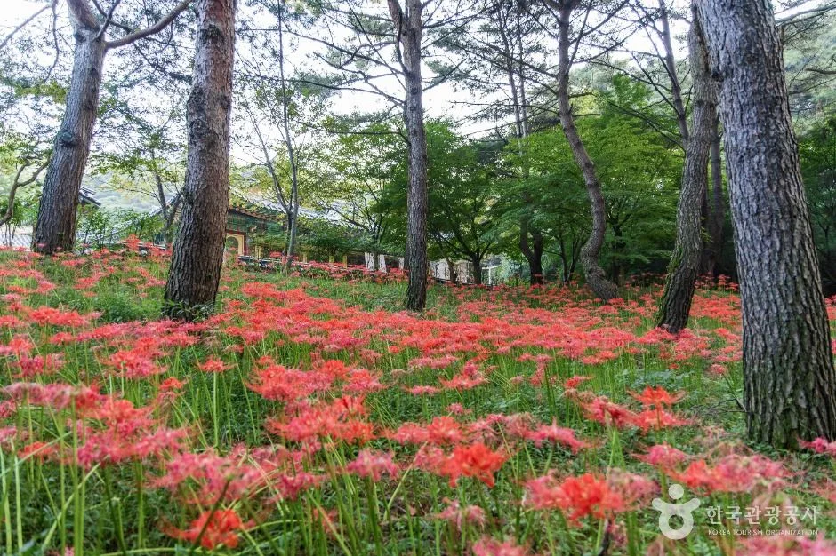
▲ 소나무 사이에 붉은 꽃이 핀 풍경. 촬영 시기는 자료에 없고, 한국관광공사 수덕사 사진 묶음에 포함돼 있다. ⓒ 한국관광공사 · 공공누리 제1유형
7. 반나절 코스 짜기 — 교통·동선
두 곳을 잇는 공식 소요시간은 확인하지 못했다. 수덕사에서 예당호까지는 국도 제45호선으로 약 23km, 25~30분이라는 언론 보도가 있을 뿐이다. 추사고택 쪽 길 안내는 예산군이 "예산추사고택IC로 나온 뒤 신암면 방면으로 추사로와 추사고택로를 따라가라"고 안내한다. 추사기념관 찾아오시는 길 바로가기
| 순서 | 할 일 | 체크 |
|---|---|---|
| 오전(09:00 이후) | 추사고택·추사기념관 관람 | 월요일 휴관. 해설은 사전 예약 |
| 점심 | 예산 시내 또는 덕산면 일대에서 식사 | 업소별 영업시간 확인 |
| 오후 | 수덕사 경내 → 수덕여관·선미술관 | 수덕여관 09:00~18:00 |
| 선택 | 예당호 출렁다리·음악분수 | 별도 기사 참고 |
| 동절기(11~2월) | 추사고택을 15시 이전에 입장하는 일정 | 17:00 폐관 |
대중교통은 불편한 편이다. 예산군은 예산터미널에서 추사고택행(예림·조림 방면) 버스를 하루 8회, 약 35분 소요로 안내한다(첫차 07:50, 막차 21:15). 수덕사행 버스는 확인하지 못했다. 같은 충남의 예당호 일정은 예산 예당호 출렁다리 기사에, 서산 쪽 조용한 사찰은 서산 개심사 가을 기사에 정리했다. 서해안 일몰 코스는 당진 삽교호·왜목마을 기사도 참고하자.
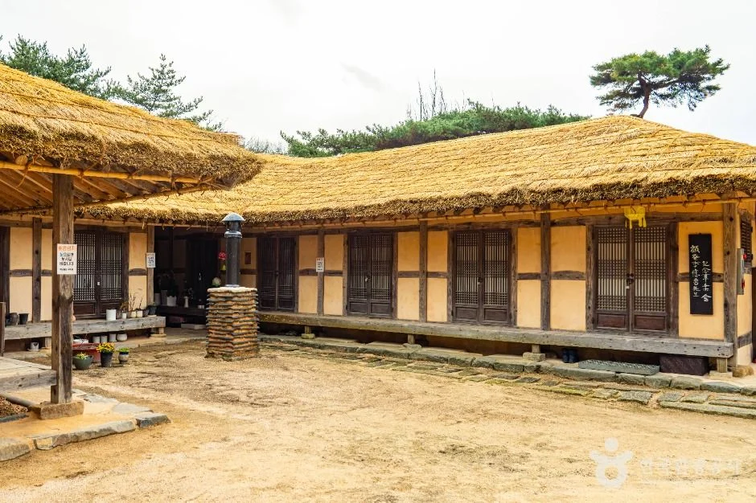
▲ 수덕여관의 초가 건물 가운데 한 곳. 촬영 시기는 자료에 없다. ⓒ 한국관광공사 · 공공누리 제1유형
✅ 출발 전 체크
1) 추사고택은 월요일 휴관(10월은 26일), 11월부터 17시 폐관 2) 관람료·주차료 무료는 추사고택 기준이며 수덕사 주차 요금은 확인하지 못함 3) 수덕사는 상시 개방, 수덕여관은 09:00~18:00 4) 두 곳 이동 시간은 내비게이션으로 확인 5) 사진은 모두 촬영 시기가 자료에 없다.
8. 정리
추사고택은 월요일 휴관·관람료 무료이고 수덕사 대웅전은 1308년에 지은 국보로 상시 개방이므로, 추사고택을 먼저 보고 오후에 수덕사로 가는 것이 반나절 코스의 정석이다. 수덕여관은 09:00~18:00 개방이고, 수덕사는 템플스테이를 운영한다.
수덕사 주차 요금, 템플스테이 현재 요금·일정, 두 곳 사이의 이동 시간, 수덕사행 버스 노선은 확인하지 못했다. 이 기사는 2026년 10월 20일 기준이므로 방문 전 추사고택(041-339-8248)과 수덕사(041-330-7700)에 확인하자.